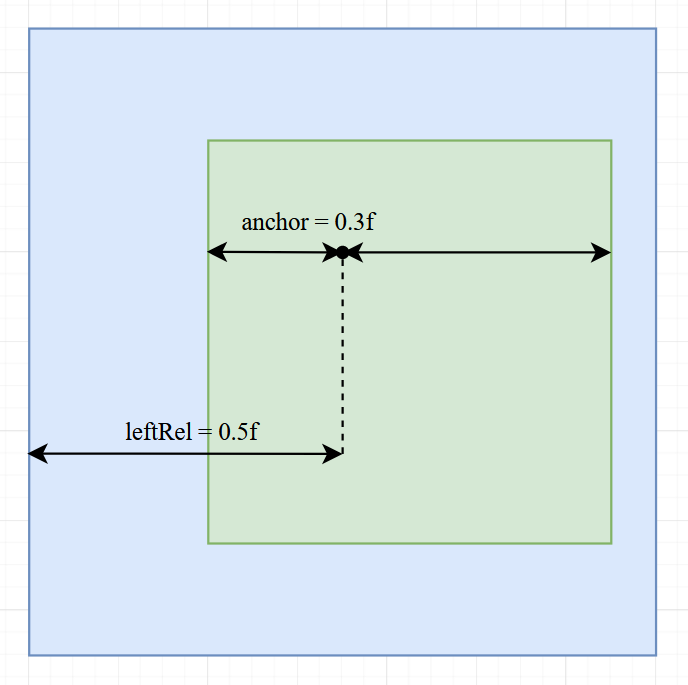

Sizing and Positioning
Each widget has several builder setter methods for position and size. They all come from the IPositioned interface.
Sizing
width(int)sets the widget width in pixelswidthRel(float)sets the widget width relative to its parent (f.e. if the parent is 120 wide and we callwidthRel(0.5f)then our widget will be 60 wideheigth(int)andheightRel(float)work analoguesize(int width, int height)is equivalent to.width(width).height(height)size(int val)is equivalent to.width(val).height(val)sizeRel(float width, float height)andsizeRel(float val)work analoguecoverChildrenWidth()makes the widget width wrapping tightly around its childrencoverChildrenHeight()works analoguecoverChildren()wraps width and height tightlyexpanded()is only useful for children ofRowandColumnwidgets. It will make the widget expand as much as possible in the widgets axis (width in row and height in column)
Positioning
We can set position on four different points. Two for each axis. left(), right(), top() and bottom().
To understand what they are doing take a look at the following picture:
As you can see the methods are fairly self-explanatory. Each of those methods has multiple variants much like width()
and widthRel(). Only methods for left() will be listed here.
left(int)sets the x position in pixels relative to its parentleftRel(float)sets the relative x position relative to its parent (f.e. 0.5f will center the widget) (it might not be too easy to fully understand how this works right nowleftRelOffset(float val, int offset)is the same asleftRel(), but also adds anoffsetin pixels after the calculationleftRelAnchor(float val, float anchor)is the same asleftRel(), but with a different anchor (see Anchor)leftRel(float val, int offset, float anchor)combinesleftRelOffset()andleftRelAnchor()left(float val, int offset, float anchor, Measure measure)isleftRel(float val, int offset, float anchor), but you can define the measure (pixels or relative yourself) (this method is mostly useless since offset and anchor are only effective with relative measure)left(DoubleSupplier val, Measure measure)is likeleft()andleftRel(), but with a dynamic value. Note that the supplier is only evaluated during resizing. You can't use for animating widgets.leftRelOffset(DoubleSupplier val, int offset)is likeleftRelOffset(float val, int offset)with a dynamic valueleftRelAnchor(DoubleSupplier val, float anchor)is likeleftRelAnchor(float val, float anchor)with a dynamic valueleftRel(DoubleSupplier val, int offset, float anchor)combines the two methods above
All the above variants also exist for right(), top() and bottom().
Additionally, there is
pos(int x, int y)combinesleft(int x)andtop(int y)posRel(float x, floaty)combinesleftRel(float x)andtopRel(float y)
Anchor
The anchor is the point of the widget at which the widget will be positioned with the relative value. The following
picture should make this clear. In the picture leftRelAnchor(0.5f, 0.3f) is called.

Here the anchor is placed at 0.3f, which is about a third of the widget.
And that anchor is positioned at 0.5f of the parent widget (the center).
Try imagining what happens with different anchor values and play around with it by yourself.
If we had called leftRel(float val, int offset, float anchor), then the offset would be added after the anchor
and relative position calculation.
Combining Size and Position
Of course, you can call multiple position and size methods, but you should be aware of its effects and limitations.
Each axis (x and y) has 3 setters (x has left(), right() and width(), y has top(), bottom() and height())
without including all the variations.
Note
You can call at most 2 setters for each axis, since with two properties set the last one can always be calculated!
For example of you call left() and right() then the width can be calculated with right - left.
Setting all three properties for an axis will cause a crash (?).
Note
You don't need to call any setters. The position defaults to (0|0) and the size defaults to 18 by 18 (for most widgets).
Changing the relative Parent
By default, the size and position are calculated relative to the direct widgets parent. But that can be changed with
relative(Area), relative(IGuiElement) and relativeToScreen().
The parent of all panels is by default the screen.
Warning
Changing the relative widget might cause some unexpected results in some edge cases. Please notify me if you run into one of those.